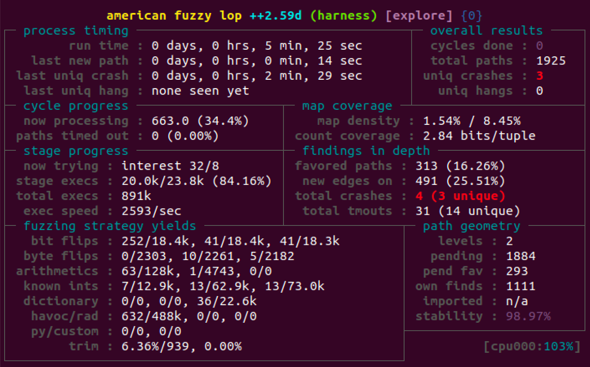

Fuzzing
Metasploit
In questo esempio, viene mostrato un esperimento di fuzzing su un semplice server FTP, tramite il tool Metasploit. Il codice del server FTP è disponibile nella macchina virtuale nella cartella swsec-labs/fuzzing/ftp, e nel repository online su https://github.com/swsec-book/swsec-labs/.
Nella sotto-cartella ftp-server, eseguite i seguenti comandi per scomprimere il codice sorgente dello FTP ed effettuarne il build del codice.
$ cd ftp-server
$ tar zxf hpaftpd.tgz
$ patch -p1 -d hpaftpd-1.05/ < hpaftpd-debug.patch
$ cd hpaftpd-1.05
$ make CFLAGS="-g"
Per verificare il funzionamento del server FTP, avviarlo con i comandi:
$ cd hpaftpd-1.05
$ fakechroot fakeroot ./hpaftpd -l -p2121 -unobody -d../ftp-root/
In un altro terminale, provate a connettervi al server FTP, usando anonymoussia come username sia come password.
$ ftp localhost 2121
Connected to localhost.
220 HighPerfomanceAnonymousFTPServer
Name (localhost:unina): anonymous
331 Password required for anonymous
Password:
230 User anonymous logged in
Remote system type is UNIX.
Using binary mode to transfer files.
ftp> ls
227 Entering Passive Mode (127,0,0,1,4,0).
150 Open data connection
drwxr-xr-x 2 root root 4096 Sep 19 17:54 .
drwxr-xr-x 2 root root 4096 Sep 19 17:54 ..
-rw-r--r-- 1 root root 5 Sep 19 16:13 ciao.txt
226 Transfer complete
ftp> pwd
257 "/" is current work directory.
ftp> quit
221 Goodbye.
Nota: Il server FTP tenta di creare una chroot jail e fare de-privileging, per mitigare potenziali tentativi di exploitation. Tuttavia, queste funzionalità richiedono i privilegi di amministratore, ad esempio tramite il comando sudo, che ostacolano l'automazione del testing (ad esempio, la raccolta di core dump). Ai fini dell'esperimento, per evitare il ricorso ai privilegi di amministratore, si esegue il server FTP in un ambiente fittizio tramite i comandi fakechroot e fakeroot, per simulare i privilegi per chroot jail e de-privileging.
Per effettuare il fuzzing, lasciare il server FTP in esecuzione e in attesa di connessioni.
Su un'altra finestra di terminale, avviare msfconsole. Per avviare il fuzzing, inserire i comandi come segue. msf6 > rappresenta il prompt dei comandi di Metasploit.
In questo esempio, Metasploit genera richieste FTP in vari punti del protocollo, inserendo delle stringhe cicliche molto lunghe al posto dei dati originali. Le stringhe cicliche hanno lunghezza da 1 a 1000 caratteri, con incrementi di 100 caratteri ad ogni tentativo.
$ ./msfconsole
msf6 > search fuzzers
search fuzzers
Matching Modules
================
# Name Disclosure Date Rank Check Description
- ---- --------------- ---- ----- -----------
...
18 auxiliary/fuzzers/ftp/ftp_pre_post normal No Simple FTP Fuzzer
...
msf6 > use auxiliary/fuzzers/ftp/ftp_pre_post
msf6 > info
Name: Simple FTP Fuzzer
Module: auxiliary/fuzzers/ftp/ftp_pre_post
...
msf6 auxiliary(fuzzers/ftp/ftp_pre_post) > set RHOSTS 127.0.0.1
msf6 auxiliary(fuzzers/ftp/ftp_pre_post) > set RPORT 2121
msf6 auxiliary(fuzzers/ftp/ftp_pre_post) > set STARTSIZE 1
msf6 auxiliary(fuzzers/ftp/ftp_pre_post) > set ENDSIZE 100
msf6 auxiliary(fuzzers/ftp/ftp_pre_post) > set STEPSIZE 1000
msf6 auxiliary(fuzzers/ftp/ftp_pre_post) > run
Ripetere l'esperimento precedente, inserendo una vulnerabilità nel server FTP (un buffer overflow). Per inserire la vulnerabilità, usare il seguente comando.
$ patch -p1 -d hpaftpd-1.05/ < hpaftpd-vulnerable.patch
Ricompilare e ri-lanciare il server FTP. Il server andrà in crash quando la stringa che indica il comando FTP eccede i 4 caratteri. È possibile rilevare la vulnerabilità ri-lanciando Metasploit come nel caso precedente.
Per rimuovere la vulnerabilità, è possibile rimuovere la modifica con questo comando.
$ patch -R -p1 -d hpaftpd-1.05/ < hpaftpd-vulnerable.patch
Boofuzz
In questo esempio, viene mostrato il fuzzing dello stesso server FTP dell'esempio precedente, tramite il tool Boofuzz. Fare riferimento all'esempio precedente per compilare e avviare il server FTP, e per inserire una vulnerabilità di buffer overflow.
Posizionarsi nella cartella boofuzz, e clonare il submodule Git contenente il tool.
$ cd boofuzz
$ git submodule update --init --recursive
Applicare la patch fornita insieme all'esempio, e installare il tool, come segue.
$ patch -d boofuzz-fuzzer/ -p1 < boofuzz-isalive.patch
$ cd boofuzz-fuzzer
$ pip3 install .
$ cd ..
Prima di avviare il fuzzing, avviare una nuova finestra di terminale, in cui eseguire il programma process monitor fornito da Boofuzz. Questo programma rileva gli eventuali crash del server FTP, raccoglie i log dei test (ad esempio, il messaggio che è stato inviato al server FTP prima del crash), raccoglie l'immagine di memoria del processo del server FTP al momento del crash (core dump), e ri-avvia il server FTP per ripetere i test.
$ ulimit -c unlimited
$ sudo bash -c "echo $PWD/core > /proc/sys/kernel/core_pattern"
$ sudo bash -c 'echo 0 > /proc/sys/kernel/core_uses_pid'
$ sudo systemctl disable apport.service
$ python3 boofuzz-fuzzer/process_monitor_unix.py -d ./coredumps
[04:11.23] Process Monitor PED-RPC server initialized:
[04:11.23] listening on: 0.0.0.0:26002
[04:11.23] crash file: ..../boofuzz/boofuzz-crash-bin
[04:11.23] # records: 0
[04:11.23] proc name: None
[04:11.23] log level: 1
[04:11.23] awaiting requests...
Su un'altra finestra di terminale, avviare il fuzzing con questo comando.
$ python3 ftp_hpa.py
È possibile osservare il progresso del fuzzing sia tramite shell, sia tramite browser al link http://localhost:26000.
Mutiny
In questo esempio, viene mostrato il fuzzing dello stesso server FTP dell'esempio precedente, tramite il tool Mutiny. Fare riferimento all'esempio precedente per compilare e avviare il server FTP, e per inserire una vulnerabilità di buffer overflow.
Installare scapy.
$ pip3 install scapy
Posizionarsi nella cartella mutiny. Se non è stato già fatto nell'esempio precedente, effettuare il clone dei submodule nel repository.
$ cd mutiny
$ git submodule update --init --recursive
Mutiny utilizza internamente il tool radamsa, un fuzzer a linea di comando. Compilare radamsa come segue.
$ cd mutiny-fuzzer
$ tar zxf radamsa-v0.6.tar.gz
$ cd radamsa-v0.6/
$ make
$ cd ..
Prima di applicare Munity, è necessario disporre di una traccia di traffico di rete FTP, in formato PCAP. Nella cartella con l'esempio, viene fornito il file PCAP ftp.pcap.
Per stampare il contenuto del file PCAP:
$ tshark -r ftp.pcap -V
Il primo passo per utilizzare Mutiny è di configurare il fuzzer usando il file PCAP, tramite lo script mutiny_prep.py. Quando chiede di combine payloads into single messages, è possibile rispondere "no". Selezionare la risposta di default per le altre domande. Lo script creerà il file ftp-0.fuzzer.
$ cd mutiny-fuzzer
$ python3 mutiny_prep.py -a ../ftp.pcap
Avviare il server FTP in una finestra di terminale separata.
Infine, avviare il fuzzer.
$ python3 mutiny.py ftp-0.fuzzer 127.0.0.1
AFL
In questo esempio, viene mostrato il fuzzing della libreria open-source libxml2, tramite il tool AFL, per riprodurre la vulnerabilità CVE-2015-8317 (heap buffer overflow). Il codice è disponibile nella macchina virtuale nella cartella examples/fuzzing-examples, e nel repository online su https://github.com/swsec-book/fuzzing-examples/.
Per effettuare il fuzzing della libreria, è necessario creare un programma (test harness) che incorpori la libreria e ne chiami le funzioni. In questo esempio, viene usato un programma che legge un file XML e ne faccia la stampa (dump) tramite la libreria. Nel caso in cui il file in ingresso non sia in formato XML corretto, la libreria produce un messaggio di errore.
$ ./harness regressions.xml
<?xml version="1.0"?>
<RegressionTests>
<!--
Within the following test descriptions the possible elements are:
...
</RegressionTests>
$ ./harness ciao.txt
ciao.txt:1: parser error : Start tag expected, '<' not found
ciao mondo
^
Scomprimere l'archivio libxml2-2.9.2.tar.gz. All'interno della cartella della libreria, creare il file harness.c con il seguente codice.
#include "libxml/parser.h"
#include "libxml/tree.h"
int main(int argc, char **argv) {
xmlInitParser();
xmlDocPtr doc = xmlReadFile(argv[1], NULL, 0);
xmlDocDump(stdout, doc);
if (doc != NULL)
xmlFreeDoc(doc);
xmlCleanupParser();
return(0);
}
Compilare la libreria e il programma harness con i seguenti comandi.
$ cd libxml2-2.9.2
$ CC=afl-clang-fast ./autogen.sh
$ CC=afl-clang-fast ./configure --with-python=no --disable-shared
$ AFL_USE_ASAN=1 make -j 4 libxml2.la
$ AFL_USE_ASAN=1 afl-clang-fast ./harness.c .libs/libxml2.a
-Iinclude -lz -o harness
Avviare AFL con il seguente comando. Il comando indica al fuzzer di usare come seed i file nella cartella go-fuzz-corpus/xml/corpus/.
$ afl-fuzz -i <PATH>/go-fuzz-corpus/xml/corpus/
-o afl_libxml2
-m none
-- ./harness @@
Il fuzzer rileva la vulnerabilità dopo pochi minuti.
